Mục tiêu học tập
Học xong Chương 12, bạn cần làm được các việc sau. Nhãn cho biết mục trình bày nội dung đó.
- 12.1Mô tả cách sóng hình thành, chuyển động và mang năng lượng.
- 12.1.1Giải thích sóng biến đổi thế nào khi tiến vào bờ.
- 12.2.1Mô tả các dạng địa hình và các đới của bờ.
- 12.2.2Mô tả khúc xạ sóng và vai trò của nó trong dòng chảy dọc bờ và vận chuyển bồi tích dọc bờ.
- 12.2.2Giải thích dòng chảy dọc bờ tạo ra mũi nhô và cồn chắn cửa vịnh như thế nào.
- 12.2.3Phân biệt bờ biển chìm ngập với bờ biển nâng và mô tả các dạng địa hình của từng loại.
- 12.2.4Mô tả mối quan hệ giữa “dòng sông cát” tự nhiên trong đới ven bờ và những nỗ lực của con người nhằm thay đổi nó.
- 12.3Mô tả bức tranh các hải lưu chính và giải thích các yếu tố tạo nên hải lưu bề mặt và hải lưu sâu.
- 12.3.3Giải thích thủy triều hình thành thế nào và phân biệt nhật triều, bán nhật triều và triều hỗn hợp.
Cách dùng tài liệu này
Các từ được gạch chân là thuật ngữ. Bấm vào một từ, hoặc mở Thuật ngữ ở góc dưới bên phải, để đọc và tìm mọi định nghĩa của chương. Chương này lần theo năng lượng từ gió đến bãi biển: gió tạo sóng (12.1), sóng nhào nặn bờ và đẩy một “dòng sông cát” chạy dọc bờ mà con người tìm cách khống chế (12.2), còn hải lưu và thủy triều làm chuyển động cả đại dương (12.3).
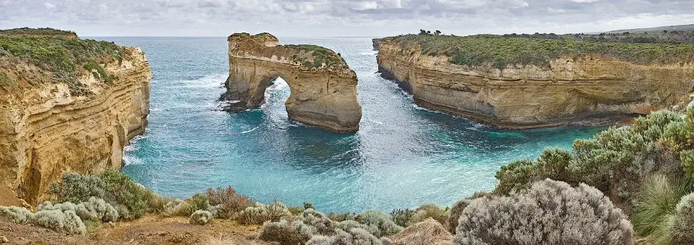
Bề mặt Trái Đất có 29% là đất liền và 71% là nước. là ranh giới giữa hai phần này, nên đó là những ranh giới nhìn thấy được dài nhất trên Trái Đất. Để hiểu các quá trình diễn ra ở ranh giới này, trước hết cần hiểu năng lượng của sóng.
12.1Sóng và các quá trình sóng
Gió thổi trên mặt nước truyền năng lượng cho nước qua ma sát, và năng lượng này tạo nên sóng. Sóng không phải là nước chạy ngang qua đại dương: mỗi hạt nước dao động theo một vòng tròn. Khi đỉnh sóng đi qua, nước tiến về phía trước; khi chân sóng đi qua, nước lùi lại. Một nút bần nổi trên mặt nước cho thấy điều đó: nó nhô lên, tiến tới, hạ xuống rồi lùi lại, nhưng gần như vẫn ở chỗ cũ (Hình 12.2).
Các phần của một con sóng (Bảng 12.1, Hình 12.3):
| Thuật ngữ | Ý nghĩa |
|---|---|
| (wave crest) | Điểm cao nhất của sóng. |
| (trough) | Điểm thấp nhất của sóng. |
| (wave height) | Khoảng cách thẳng đứng từ chân đến đỉnh sóng; do năng lượng sóng quyết định. |
| (amplitude) | Một nửa độ cao sóng: từ đỉnh (hoặc chân) sóng đến mực nước tĩnh. |
| (wavelength) | Khoảng cách nằm ngang giữa hai đỉnh sóng liên tiếp. |
| (wave velocity) | Tốc độ đỉnh sóng tiến về phía trước; liên quan đến năng lượng sóng. |
| (wave period) | Thời gian để hai đỉnh sóng kề nhau đi qua một điểm cố định. |
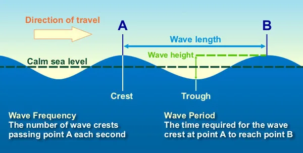
Chuyển động tròn của hạt nước yếu dần theo độ sâu và không đáng kể ở độ sâu khoảng một nửa bước sóng. Độ sâu đó là (wave base): dưới mực này nước không còn bị sóng khuấy động. Ở vùng nước nông hơn mực sóng gốc, sóng khuấy động đáy và tạo gợn trên cát. Nếu sóng vào bãi với các đỉnh cách nhau khoảng 6 m (~20 ft), chúng khuấy nước tới độ sâu khoảng 3 m (~10 ft); đó là (fair-weather wave base). Trong các cơn bão mạnh như bão nhiệt đới, bước sóng và mực sóng gốc tăng mạnh, tới (storm wave base) khoảng 91 m (~300 ft) (Hình 12.4).

Năng lượng sóng nhận được phụ thuộc vào tốc độ gió và quãng đường gió thổi trên mặt nước, gọi là (fetch). Sóng đập vào bờ thường do bão ở cách xa hàng trăm dặm tạo ra và đã đi nhiều ngày. Gió thổi theo một hướng khá ổn định tạo ra một (wave train): một nhóm sóng gần song song cùng truyền đi. Một vùng đà gió có thể sinh ra nhiều bước sóng, và sóng dài đi nhanh hơn nên tới bờ xa trước. Sự phân loại theo bước sóng trong khi truyền này là (wave dispersion) (Hình 12.5).
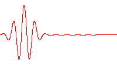
12.1.1 Sóng khi tiến vào bờ
Ngoài khơi, các đoàn sóng từ nhiều hướng cắt nhau và tương tác, nên mặt biển trông lởm chởm. Đó là (wave interference) (Hình 12.6):
- (constructive interference): đỉnh trùng đỉnh. Độ cao sóng tổng bằng tổng độ cao từng sóng (); chân trùng chân tạo những hõm sâu hơn.
- (destructive interference): đỉnh trùng chân sóng nên chúng triệt tiêu nhau.
Khi sóng vào vùng nước sâu khoảng nửa bước sóng trở xuống, chúng bắt đầu chạm đáy và ma sát làm chúng chậm lại. Năng lượng sóng mang theo vẫn giữ nguyên, nên sóng dâng cao hơn. Mỗi vòng quỹ đạo được nuôi bằng nước từ chân sóng phía trước; ở vùng nước nông, chân sóng phía trước không còn đủ nước để hoàn thành vòng tròn, nên đỉnh sóng đổ ập xuống thành (breaker) (Hình 12.7). Hình trong chương cho thấy bốn kiểu sóng vỡ (Hình 12.8).

Bốn kiểu sóng vỡ
Chương chỉ nêu tên các kiểu này trong hình. Mô tả ngắn (Wikipedia, “Breaking wave”):
- Sóng vỡ tràn (spilling): trên đáy thoải, đỉnh sóng mất ổn định và bọt trắng tràn xuống mặt sóng.
- Sóng vỡ cuộn (plunging): trên đáy dốc hơn hoặc nơi nước nông đột ngột, đỉnh sóng cuộn lại và đổ ập về phía trước.
- Sóng vỡ sụp (collapsing): trung gian giữa sóng vỡ cuộn và sóng vỡ dâng; phần dưới mặt sóng dốc đứng rồi sụp xuống.
- Sóng vỡ dâng (surging): trên bãi rất dốc, sóng dâng lên bờ mà gần như không vỡ.
(tsunami), đôi khi bị gọi sai là “sóng thủy triều”, sinh ra từ một sự kiện mạnh dưới đáy biển: động đất, sạt lở ngầm hoặc núi lửa phun (Học phần 9 và 4). Trong một trận động đất, đá vỏ dưới biển có thể đột ngột nâng một phần đáy biển lên. Khối nước bên trên bị đẩy lên thành một chỗ phồng, và một đoàn sóng lan ra mọi hướng với tốc độ cực lớn, trên 322 km/h (200 mph), mang theo năng lượng khổng lồ (Hình 12.9).
- Ngoài khơi, sóng thần có thể đi qua mà không ai nhận ra: nó đi rất nhanh, bước sóng rất dài và độ cao rất thấp.
- Gần bờ, sóng chạm đáy biển nông, ma sát làm sóng chậm lại và với cùng năng lượng, độ cao sóng tăng lên. Sóng có thể đập vào bờ như một bức tường nước cao hơn 30 m (~100 ft). Con sóng khổng lồ này, gọi là (tsunami runup), có thể tràn sâu vào đất liền, vượt xa bãi biển và phá hủy công trình ở sâu trong đất liền.
Dấu hiệu cảnh báo: nước biển rút ra
Chân sóng phía trước sóng thần đến trước và kéo nước rút ra, làm lộ đáy biển. Người tò mò có thể đi ra xem sinh vật biển mắc cạn rồi bị cuốn đi khi đỉnh sóng vỡ ập tới. Nếu nước biển đột ngột rút ra xa, hãy lên chỗ cao.
Tự kiểm tra: Bài kiểm tra mục 12.1 trong sách ↗
12.2Các dạng địa hình bờ
Bờ biển là nơi biến động, năng lượng cao và phức tạp về địa chất, với nhiều dạng địa hình xâm thực và bồi tụ (Học phần 5). Bờ biển bao gồm mọi phần của ranh giới đất–biển chịu tác động trực tiếp của biển, từ đất cao hơn xa mức triều cao cho tới đáy biển nằm sâu dưới mực sóng gốc bình thường. Còn (shoreline) là ranh giới trực tiếp giữa nước và đất liền, dịch chuyển theo thủy triều; vùng giao diện dịch chuyển này là (littoral zone). Sóng, dòng chảy, khí hậu, hình thái bờ và trọng lực cùng tác động lên ranh giới này để tạo nên các dạng địa hình bờ.
12.2.1 Các đới bờ
Đường bờ được chia thành năm đới chính (Hình 12.10, Bảng 12.2):
- (offshore): nằm dưới nước nhưng vẫn hoạt động địa chất, vì (turbidity current) đổ xuống sườn lục địa và tích tụ ở chân lục địa.
- (nearshore): vùng chịu tác động của sóng, nơi nước sâu bằng hoặc nhỏ hơn nửa bước sóng. Bề rộng của đới phụ thuộc vào bước sóng dài nhất của đoàn sóng tới và độ dốc đáy biển. Đới này bao gồm (shoreface), nơi cát bị khuấy động và lắng đọng:
- Sườn bờ ngầm trên: chịu sóng hằng ngày; cát phân lớp mỏng và phân lớp xiên.
- Sườn bờ ngầm dưới: chỉ sóng bão làm di chuyển; cát phân lớp xiên dạng gò (Học phần 5).
- (surf zone): nơi sóng vỡ.
- (foreshore): chồng lên vùng sóng vỗ, lúc ướt lúc khô theo sóng và thủy triều; cát chọn lọc tốt, phân lớp song song. (beach face) của nó là nơi sóng vỡ tràn lên thành (swash) rồi chảy ngược xuống thành (backwash).
- (backshore): luôn cao hơn mực nước biển trong điều kiện bình thường. Gió thổi vào bờ có thể đưa cát ra sau bãi và gờ bãi để tạo .
(berm) là những gờ cát thấp nằm trên mặt bãi. Ở Bắc Mỹ, phần bãi mùa hè nơi mọi người trải khăn là : năng lượng sóng mùa hè thường thấp hơn nên cát dồn lên bãi. Phía sau là một gờ cát thấp, . Vào mùa đông, năng lượng bão lớn hơn đưa cát của gờ bãi mùa hè ra khỏi bãi và dồn vào đới gần bờ; sang năm sau cát lại trở về gờ bãi mùa hè.
| Đới | Vị trí | Quá trình / trầm tích |
|---|---|---|
| Ngoài khơi | Phía ngoài đới gần bờ, dưới nước | Dòng đục chảy xuống sườn lục địa tới chân lục địa |
| Gần bờ | Độ sâu ≤ ½ bước sóng | Sườn bờ ngầm: cát phân lớp mỏng và phân lớp xiên (phần trên), cát phân lớp xiên dạng gò (phần dưới) |
| Vùng sóng vỗ | Trong đới gần bờ, sát bãi | Sóng vỡ |
| Tiền bờ | Chồng lên vùng sóng vỗ; giữa hai mực triều | Lúc ướt lúc khô; cát chọn lọc tốt, phân lớp song song; mặt bãi và gờ bãi |
| Hậu bờ | Cao hơn mực nước biển trong điều kiện bình thường | Cát do gió thổi tạo đụn cát |
12.2.2 Khúc xạ, dòng chảy dọc bờ và vận chuyển bồi tích dọc bờ
Sóng thường tiến vào bờ theo một góc xiên. Khi vào vùng nước sâu chưa tới nửa bước sóng, sóng chậm lại, và đầu đỉnh sóng gần bãi nhất chậm lại trước, nên đỉnh sóng uốn cong. Đó là (wave refraction). Nhìn từ bãi, sóng khúc xạ trông như tiến thẳng vào, song song với bãi, nhưng thực ra vẫn tới với một góc nhỏ (Hình 12.11):
- Sóng leo chạy lên mặt bãi theo một góc nhỏ, còn sóng rút chảy thẳng xuống do trọng lực.
- Chênh lệch nhỏ này tạo ra một dòng chảy song song bãi, gọi là (longshore current).
- Sóng khuấy cát trong vùng sóng vỗ và đẩy nó dọc bờ: đó là (longshore drift). Dọc cả bờ tây và bờ đông Bắc Mỹ, cát trung bình được vận chuyển từ bắc xuống nam.
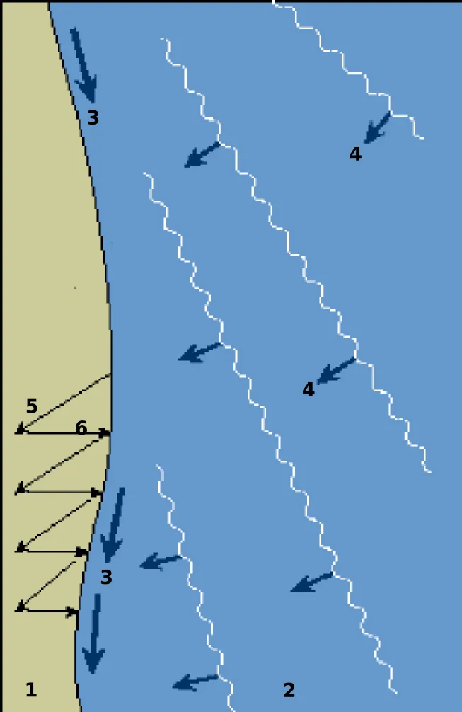
Dòng chảy dọc bờ mang cát đi dọc bờ cho tới khi gặp một vịnh hoặc lạch, nơi cát lắng xuống ở vùng nước lặng hơn (Học phần 11) và có thể tạo thành một (spit, còn gọi là doi cát). Khi lớn dần, mũi nhô có thể vươn chắn ngang cửa vịnh thành (baymouth bar) (Hình 12.13, Hình 12.14).
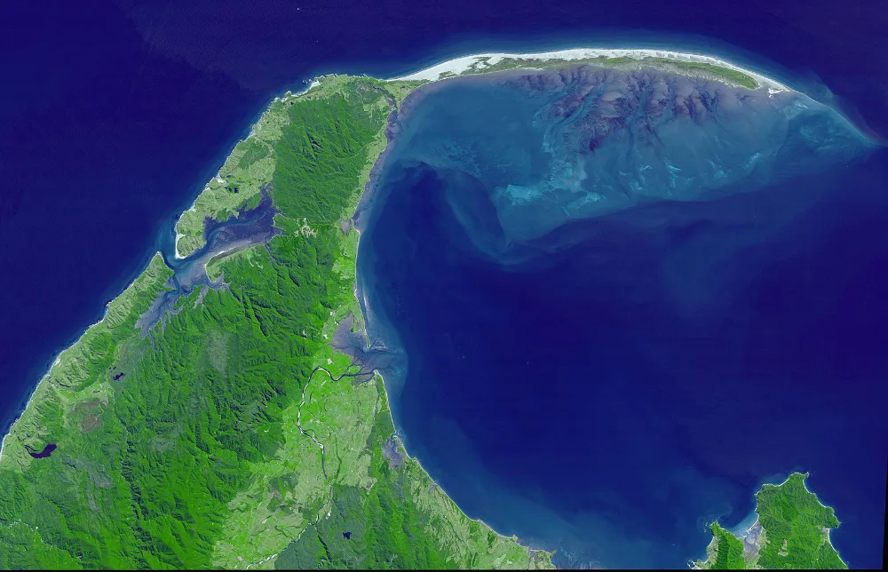
Ở nơi vịnh hoặc lạch được dùng làm chỗ neo đậu tàu thuyền, mũi nhô và cồn chắn cửa vịnh gây trở ngại lớn, và cộng đồng địa phương tìm cách giữ cho cảng thông thoáng (Bảng 12.3). Một cách là xây (jetty): một công trình dài bằng bê tông hoặc đá làm lệch dòng cát ra khỏi cửa cảng hay luồng nước (Hình 12.15). Nếu đê không đẩy cát ra đủ xa, cát vẫn tiếp tục chạy dọc bờ và tạo mũi nhô vòng quanh đầu đê.
| Biện pháp | Cách thức | Chi phí và hiệu quả |
|---|---|---|
| Đê chắn cát | Công trình làm lệch dòng cát ra khỏi cửa cảng | Cát vẫn có thể chảy vòng qua đầu đê và tạo mũi nhô |
| (dredging) | Đào cát ở mũi nhô đang lớn, chở bằng sà lan và trả lại dòng bồi tích ở phía hạ lưu cảng | Đắt hơn, hiệu quả hơn |
| Bơm và đường ống | Hút cát ở phía thượng lưu cảng và bơm sang dòng bồi tích phía hạ lưu | Còn đắt hơn, hiệu quả hơn nữa |
Vì các quá trình tự nhiên không bao giờ dừng, những giải pháp này đòi hỏi duy trì liên tục. Thành phố Santa Barbara, California, đã thử nhiều cách trước khi chọn hệ thống bơm và đường ống.
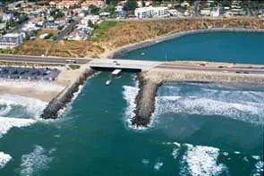
(rip current) có liên quan với dòng chảy dọc bờ. Ở nơi đoàn sóng đẩy nước thẳng vào mặt bãi, hoặc nơi hình dạng đáy gần bờ làm sóng khúc xạ dồn về một điểm trên bãi, nước dồn ứ lên bờ. Nước này phải tìm đường trở ra biển: một lối thoát khá hẹp, qua đó dòng chảy rút xa bờ đưa nước thẳng ra khỏi bãi (Hình 12.16). Bơi thẳng ngược dòng vào bờ là vô ích.

Bị cuốn vào dòng chảy rút xa bờ?
- Đừng bơi thẳng ngược dòng vào bờ.
- Người bơi trung bình: bơi song song với bờ cho tới khi ra khỏi dòng, rồi bơi vào bờ.
- Người bơi giỏi: để dòng đưa ra tới nơi nó tan, bơi vòng qua rồi quay vào.
- Tốt nhất: hiểu về dòng chảy rút xa bờ, có kế hoạch trước khi xuống nước và tuân theo biển cảnh báo.
NOAA cũng khuyên như vậy: bơi song song với bờ, rồi bơi vào theo đường chéo.
Giống dòng chảy rút xa bờ, (undertow) đưa nước ra xa bờ, nhưng nó chảy bên dưới các con sóng đang tiến vào và mạnh nhất trong vùng sóng vỗ, nơi sóng cao và nước nông. Đây là một dòng hồi khác của lượng nước do sóng đưa vào bờ.
12.2.3 Bờ biển nâng và bờ biển chìm ngập
Các chuyển động kiến tạo và thay đổi mực nước biển khiến mực nước biển dâng hoặc hạ lâu dài so với đất liền (Bảng 12.4). (emergent coast) hình thành ở nơi mực nước biển hạ so với đất liền; (submergent coast) hình thành ở nơi mực nước biển dâng so với đất liền.
| Bờ biển nâng | Bờ biển chìm ngập | |
|---|---|---|
| Mực nước biển so với đất liền | Hạ xuống | Dâng lên |
| Nguyên nhân | Nâng kiến tạo, mực nước biển hạ | kiến tạo (vỏ Trái Đất hạ xuống), băng hà tan |
| Quá trình chính | Sóng, gió và trọng lực xâm thực bờ | Nước dâng làm ngập đất liền |
| Dạng địa hình | Vách cao, mũi đất, đá gốc lộ, sườn dốc, bờ đá, vòm, khối đá tàn dư, doi cát nối đảo, thềm mài mòn, hàm ếch | Cửa sông bị ngập, fjord, đảo chắn, đầm phá, cửa sông, vịnh, bãi triều, dòng triều |
Bờ biển nâng
Ở bờ biển nâng, năng lượng sóng, gió và trọng lực xâm thực đường bờ, và các dạng xâm thực được nâng cao so với vùng sóng (Hình 12.17):
- (sea cliff) tồn tại lâu dài vì sóng khoét chân vách và đá phía trên đổ xuống do di chuyển khối trên sườn (Học phần 10).
- Sóng khúc xạ tấn công đá gốc ở chân (headland) và có thể khoét thành (sea arch), có khi kéo dài xuống dưới mực nước biển thành (sea cave). Khi vòm sập, nó để lại một hay nhiều cột đá, gọi là (stack, trụ đá biển).
- Một khối đá tàn dư hay hòn đảo gần bờ tạo ra vùng nước lặng phía sau nó. Cát của dòng bồi tích dọc bờ tích tụ ở đó thành (tombolo), một dải cát nối đảo hoặc khối đá với bờ (Hình 12.18).
- Ở nơi ít cát, sóng có thể mài thành (wave-cut platform) trải qua vùng sóng vỗ: một bậc thềm đá trơ, có vũng triều lúc chân triều, kéo dài tới chân vách.
- Nơi sóng khoét vào chân vách biển sẽ tạo (wave notch) (Hình 12.19).
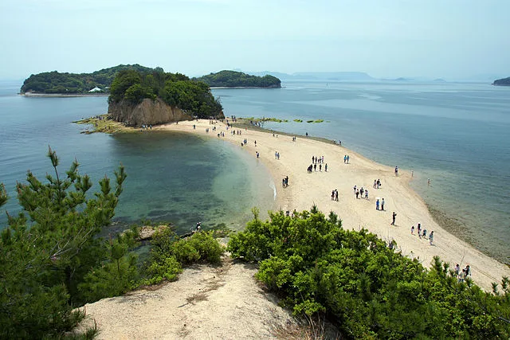
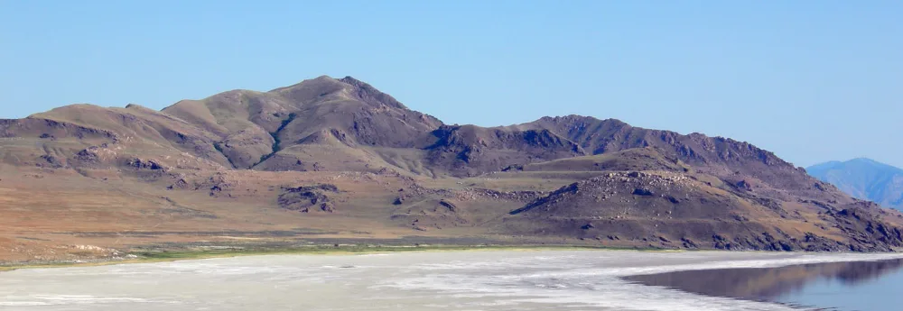
Bờ biển chìm ngập
Bờ biển chìm ngập hình thành ở nơi mực nước biển dâng so với đất liền, do sụt lún kiến tạo hoặc do nước biển dâng khi băng hà tan.
- Cửa sông bị ngập: nước dâng nhấn chìm các thung lũng sông, như ở vịnh Chesapeake (Hình 12.20).
- (vịnh hẹp băng hà): các thung lũng băng hà bị ngập khi mực nước biển dâng sau thời kỳ băng hà cuối (Học phần 14).
- (barrier island): các thân cát kéo dài, hình thành từ cát bãi cổ, nằm song song với đường bờ, thường có đầm phá phía sau. Nguồn gốc của chúng còn tranh luận: một số nhà khoa học cho rằng chúng hình thành khi các khiên băng tan sau thời kỳ băng hà cuối làm mực nước biển dâng; một giả thuyết khác cho rằng chúng phát triển từ mũi nhô và cồn cát bồi ở xa ngoài khơi.

(tidal flat), hay bãi bùn, hình thành ở nơi thủy triều lần lượt làm ngập và phơi lộ những vùng thấp ven bờ (Hình 12.21). Dòng triều tạo ra các vết gợn sóng đối xứng và bất đối xứng xen nhau, còn bùn khô tạo khe nứt khô. Các nhà địa chất chia bãi triều thành ba đới, mỗi đới có thể có hoặc không trên một bãi cụ thể (Bảng 12.5).
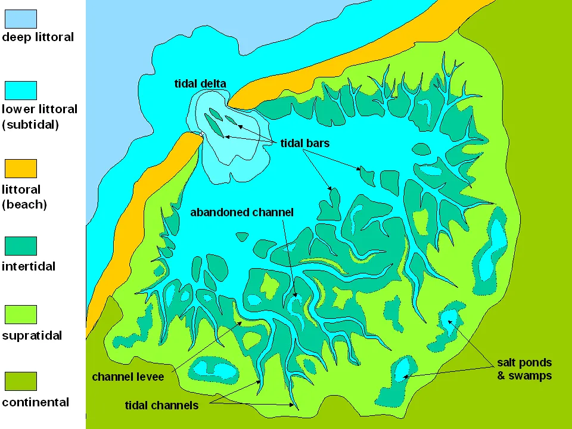
| Đới | Điều kiện | Trầm tích và cấu tạo |
|---|---|---|
| (barren zone) | Dòng chảy mạnh | Trầm tích thô hơn; thường có vết gợn sóng và phân lớp xiên |
| (marsh) | Có thực vật | Cát và bùn |
| (salt pan) | Ít bị ngập nhất | Hạt mịn nhất: bột; khe nứt khô |
Đồng nhất luận ở Utah
Ở trung tâm dãy Wasatch, trầm tích bãi triều cổ lộ ra trong hệ tầng Big Cottonwood tuổi Tiền Cambri. Cấu tạo trầm tích của chúng giống bãi triều ngày nay, nên chúng hình thành trong một môi trường tương tự: đó là nguyên lý đồng nhất luận của Hutton (Học phần 1). Khi ấy cũng có đường bờ, thủy triều và các quá trình ven bờ, nhưng chưa có thực vật trên cạn giữ trầm tích phong hóa tại chỗ (Học phần 5), nên tốc độ xâm thực hẳn đã khác.
(lagoon) là vùng nước bị mũi nhô, đảo chắn hoặc các dạng tương tự ngăn cách một phần với đại dương (Hình 12.22). (estuary) là một kiểu đầm phá có thực vật, nơi nước ngọt chảy vào làm nước trở nên (brackish), có độ mặn giữa nước mặn và nước ngọt. Các từ đầm phá, cửa sông và cả vịnh thường được dùng lẫn cho nhau. Đầm phá và cửa sông là vùng chuyển tiếp giữa đất và nước, nơi các môi trường ven bờ (bờ nông), hồ (hồ hoặc đầm) và sông chồng lên nhau (Học phần 5).

12.2.4 Tác động của con người lên bãi biển
Con người tác động lên bãi biển khi xây nhà ở, chung cư, khách sạn, cơ sở kinh doanh và bến cảng, rồi lại tác động lần nữa khi cố khống chế quá trình xâm thực tự nhiên sau đó. Sóng, dòng chảy, vận chuyển bồi tích dọc bờ và các đập trên sông lấy đi cát của những khu đất mặt biển đắt tiền và khiến các cảng từng yên tĩnh phải hứng năng lượng sóng lớn. Để bảo vệ tài sản, giữ cát trên bãi và giữ cảng yên tĩnh, các thành phố và chủ đất xây đê chắn cát, kè mỏ hàn, đập và đê chắn sóng (Hình 12.23, Bảng 12.6).
| Công trình / biện pháp | Là gì | Mục đích | Tác dụng phụ |
|---|---|---|---|
| Đê chắn cát | Khối đá tảng lớn hoặc tường bê tông ở cửa sông hay cửa cảng | Làm lệch dòng chảy hoặc dòng triều, giữ luồng thông ra biển, che chắn cảng hay bãi khỏi sóng | Cát dồn ở một bên và mất ở bên kia |
| (groin) | Hàng rào nhỏ hơn bằng dây thép, gỗ hoặc bê tông, cắt ngang bãi, vuông góc với bờ | Giữ cát trên bãi (không làm lệch dòng cát) | Xói lở phía hạ lưu; mỗi kè lại khiến cần thêm kè khác, tạo đường bờ dạng răng cưa |
| (breakwater) | Công trình ngoài khơi để sóng vỡ vào | Tạo vùng nước lặng cho cảng và chỗ neo đậu | Chặn sóng và cát không tới bãi; doi cát nối đảo bồi lấp phía sau |
| (beach replenishment) | Chở cát tới bằng xe tải hoặc sà lan đổ lên bãi | Bù lượng cát bị đập ở thượng nguồn giữ lại | Có thể làm xáo trộn hệ sinh thái ven bờ và mang theo vật lạ |
Kè mỏ hàn giữ cát ở phía thượng lưu và làm mất cát ở phía hạ lưu, nên mỗi kè trên một lô đất lại khiến lô kề bên phía hạ lưu cũng phải xây kè. Một loạt kè làm đường bờ có dạng răng cưa (Hình 12.24, Hình 12.25).


Sông suối mang cát ra bờ biển, nơi dòng chảy dọc bờ rải cát dọc các bãi. Đập giữ cát lại và ngăn nó tới bãi. Khi nuôi bãi, người ta chở cát từ nơi khác tới bằng xe tải hoặc sà lan. Việc này có thể làm xáo trộn hệ sinh thái ven bờ, vì sinh vật bản địa tiếp xúc với hệ sinh thái và vi sinh vật lạ, và có thể mang theo vật lạ: du khách ở một bãi biển bờ Đông Hoa Kỳ được nuôi bãi đã tìm thấy đạn dược và mảnh kim loại, vốn được nạo vét từ các trường thử quân sự bỏ hoang.
Đê chắn sóng bảo vệ cảng và chỗ neo đậu bằng cách làm sóng vỡ ngoài khơi, để lại vùng nước lặng phía sau. Nhưng nó ngăn sóng tới bãi và chặn cát di chuyển theo dòng bồi tích dọc bờ. Dòng bồi tích thả cát ở vùng nước lặng, đường bờ lấn ra, và một doi cát nối đảo hình thành sau đê rồi dần lấp kín khoảng trống. Ở Venice, California, đê chắn sóng xây để tạo cảng nước lặng đã sinh ra một doi cát nối đảo, nay hoạt động như một kè mỏ hàn lớn trên dòng bồi tích của bãi (Hình 12.26).

12.2.5 Hẻm vực ngầm
(submarine canyon) là các hẻm vực hẹp và sâu dưới nước trên thềm lục địa, thường nằm ở cửa các hệ thống sông lớn trên đất liền (Hình 12.27). Chúng hình thành khi:
- sông đào sâu vào thềm lục địa trong các thời kỳ mực nước biển thấp, và
- vật liệu liên tục trượt sụt hoặc chảy xuống từ cửa sông hay châu thổ.
Các dòng nước giàu trầm tích, nặng hơn nước biển, chảy xuống các hẻm vực, có thể khoét sâu chúng, rồi đổ ra đáy đại dương. (turbidity flow) là các vụ sạt lở ngầm, giải phóng từ sườn châu thổ dốc và các dòng trầm tích ngầm, lao xuống sườn lục địa. Chúng tiếp tục khoét hẻm vực, và trầm tích hình quạt bồi lên ở cửa hẻm vực trên chân lục địa (Học phần 5).
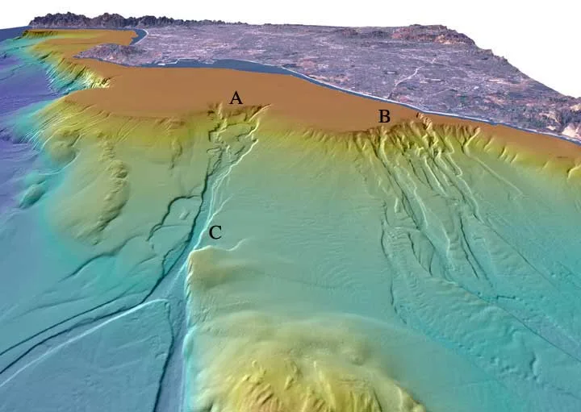
Tự kiểm tra: Bài kiểm tra mục 12.2 trong sách ↗
12.3Hải lưu và thủy triều
Nước đại dương chuyển động dưới dạng sóng, hải lưu và thủy triều. Hải lưu được thúc đẩy bởi các luồng gió toàn cầu thổi ổn định trên mặt nước và bởi khác biệt về mật độ nước. Chúng là một phần của “cỗ máy nhiệt” Trái Đất: nước đại dương hấp thụ năng lượng Mặt Trời và hải lưu phân phối nó đi. Nước còn có (specific heat) cao, tức nhiệt lượng cần để làm một đơn vị lượng chất nóng thêm một độ: khoảng một calo cho mỗi centimét khối (một gam) nước mỗi °C. Vì vậy các đại dương, phủ 71% bề mặt Trái Đất, hấp thụ nhiệt Mặt Trời mà nhiệt độ ít thay đổi và mang nhiệt đó đi khắp hành tinh.
12.3.1 Hải lưu bề mặt
Sự tự quay của Trái Đất và ảnh hưởng mạnh đến hải lưu (Học phần 13). Bản đồ thế giới (Hình 12.28) cho thấy các dòng chảy vòng lớn ở bắc và nam Đại Tây Dương, Thái Bình Dương và Ấn Độ Dương. Các (gyre) này do hoàn lưu khí quyển thúc đẩy và, do hiệu ứng Coriolis, quay theo chiều kim đồng hồ ở Bắc bán cầu và ngược chiều kim đồng hồ ở Nam bán cầu (Hình 12.29).
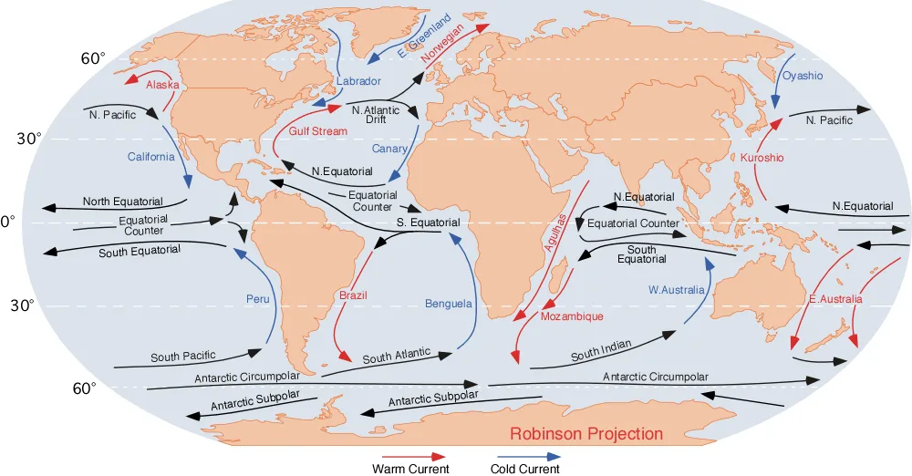
| Dòng biên tây | Dòng đưa nước lạnh trở về | |
|---|---|---|
| Nước | Ấm | Lạnh |
| Hướng chảy | Từ xích đạo về phía cực | Về phía xích đạo |
| Hình dạng | Hẹp | Rộng và tản mát |
| Vị trí | Phía tây đại dương, dọc bờ đông các lục địa | Phía đông đại dương, dọc bờ tây các lục địa |
| Ví dụ | Gulf Stream, hải lưu Kuroshio (bắc); hải lưu Brazil, Mozambique, Đông Úc (nam) | Hải lưu Humboldt (Peru) |
| Ảnh hưởng tới đất liền gần đó | Ấm hơn: Gulf Stream làm Bắc Âu ôn hòa hơn nhiều so với đông bắc Canada và Greenland ở cùng vĩ độ | Mát và khô hơn: nước lạnh hạn chế bốc hơi, một lý do khiến hoang mạc Atacama ở Chile mát và khô hạn |
(western boundary current) đóng vai trò then chốt đối với khí hậu địa phương (Bảng 12.7). Dòng biên tây ấm và dòng biên đông lạnh làm vùng đất gần đó ấm hơn hoặc lạnh hơn những nơi khác cùng vĩ độ.
12.3.2 Hải lưu sâu
Một hải lưu chuyển động theo phương ngang hay phương đứng tùy vào mật độ của nó, và mật độ nước biển do nhiệt độ và độ mặn quyết định. Bốc hơi và nước ngọt từ sông làm thay đổi độ mặn, do đó thay đổi mật độ. Chuyển động của nước sâu được thúc đẩy theo cách này là (thermohaline circulation): thermo chỉ nhiệt độ, haline chỉ độ mặn. Nó kết nối các khối nước sâu của toàn thế giới. Gulf Stream cho thấy quá trình bắt đầu như thế nào:
- Gulf Stream ấm chảy về phía cực; nhiệt của nó thúc đẩy bốc hơi, lấy đi nhiệt của nước, nên nước nguội dần.
- Bốc hơi, cùng với sự hình thành băng ở vĩ độ cao, làm nước mặn hơn.
- Nước lạnh hơn, mặn hơn và nặng hơn tới Bắc Đại Tây Dương gần Greenland thì chìm xuống thành dòng nước sâu.
- Các dòng sâu nối với nhau trên toàn cầu rồi trồi lên mặt, đảo trộn toàn bộ đại dương và mang chất dinh dưỡng tới sinh vật biển (Hình 12.30).
Mối liên kết toàn cầu giữa hoàn lưu nông và hoàn lưu sâu này đôi khi được gọi là (global conveyor belt).
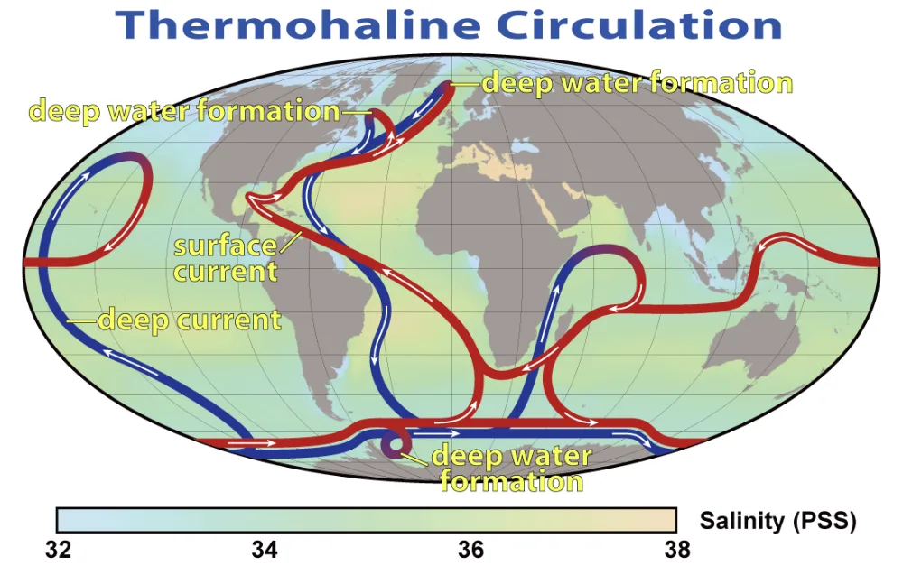
12.3.3 Thủy triều
(tide) là sự dâng lên và hạ xuống hằng ngày của mực nước biển, do lực hấp dẫn của Mặt Trời và Mặt Trăng tác động lên đại dương. Mỗi ngày Trái Đất tự quay trong trường hấp dẫn của Mặt Trăng và Mặt Trời. Mặt Trời lớn hơn nhiều và lực hút mạnh hơn, nhưng Mặt Trăng ở gần hơn nhiều, nên ảnh hưởng của Mặt Trăng lên thủy triều là chủ đạo. Chênh lệch giữa đỉnh triều và chân triều, gọi là (tidal range), phụ thuộc chủ yếu vào vị trí tương đối của Mặt Trăng và Mặt Trời so với Trái Đất (Hình 12.31):
- (spring tide): Mặt Trời, Mặt Trăng và Trái Đất thẳng hàng, vào lúc trăng tròn hoặc trăng non; biên độ triều lớn nhất.
- (neap tide): Mặt Trăng và Mặt Trời vuông góc so với Trái Đất, vào lúc trăng thượng huyền và hạ huyền, khoảng một tuần sau triều cường; biên độ triều nhỏ nhất.

Trái Đất quay trong một “lớp bao thủy triều” (tidal envelope), nên mỗi ngày nước triều đều lên và rút. Thủy triều được đo tại các trạm ven biển, và NOAA công bố số liệu đo cùng dự báo. Có ba kiểu thủy triều (Bảng 12.8, Hình 12.32). Chúng được tính theo (tidal day), thời gian để Mặt Trăng thẳng hàng trở lại với một điểm trên Trái Đất đang quay: dài hơn 24 giờ một chút, khoảng 24 giờ 50 phút (Hình 12.33).
| Kiểu | Số chu kỳ mỗi ngày thủy triều | Ghi chú |
|---|---|---|
| (diurnal) | 1 | Một lần đỉnh triều và một lần chân triều mỗi ngày thủy triều |
| (semidiurnal) | 2 | Mỗi chu kỳ khoảng 12 giờ 25 phút; biên độ thường khác nhau giữa các chu kỳ |
| (mixed) | 2 | Các đỉnh và chân triều cao thấp không đều, thay đổi trong tháng: ví dụ đỉnh cao hơn, đỉnh thấp hơn, chân cao hơn và chân thấp hơn |

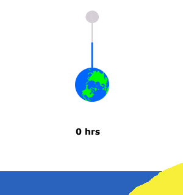
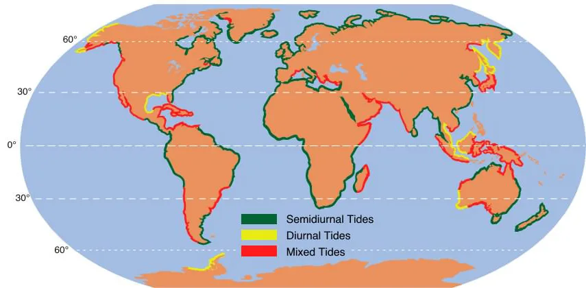
Dự báo kiểu thủy triều và thời điểm các pha triều tới một nơi rất phức tạp và chỉ làm được cho vài ngày. Thời điểm đó phụ thuộc vào (bathymetry), tức độ sâu các bồn đại dương, và vào các lục địa chắn đường lớp bao thủy triều. Chuyên gia thủy triều địa phương lập dự báo 48 giờ từ các bảng thủy triều dựa trên quan trắc hằng ngày.
Biên độ triều điển hình khoảng 1 m (3 ft). Biên độ cực lớn xảy ra ở nơi sóng triều đi vào một vùng hẹp, dồn tụ năng lượng triều (Hình 12.35):
- Eo biển Manche (English Channel), giữa Anh và lục địa châu Âu: 7 đến 9,75 m (23 đến 32 ft).
- Vịnh Fundy, vịnh hình phễu giữa Nova Scotia và New Brunswick, Canada: biên độ triều lớn nhất Trái Đất, trung bình gần 12 m (40 ft) và cực đại khoảng 18 m (60 ft) theo chương sách (xem ghi chú kiểm chứng).
Triều lên trên bãi rộng
Ở nơi biên độ triều cực lớn, người đi ra đáy biển lộ ra lúc triều rút có thể không chạy kịp khi triều lên.
Tự kiểm tra: Bài kiểm tra mục 12.3 trong sách ↗
Tóm tắt
Sóng, hải lưu và thủy triều là các tác nhân chính nhào nặn đường bờ, và phần lớn địa hình ven biển bắt nguồn từ cát do vận chuyển bồi tích dọc bờ mang đi và từ sự dâng hạ lâu dài của mực nước biển. Đường bờ, ranh giới giữa nước và đất liền, được chia thành năm đới, và các quá trình ở đó là quá trình ven bờ. Sóng tới bãi theo góc xiên và uốn cong về phía bãi (khúc xạ sóng), tạo ra dòng chảy dọc bờ và vận chuyển bồi tích dọc bờ đưa cát đi dọc bờ biển. Nơi dòng chảy thả cát ở vùng nước lặng, nó bồi nên mũi nhô và cồn chắn cửa vịnh, thường làm tắc vịnh và cảng; con người xây đê chắn cát và kè mỏ hàn để giữ cảng thông thoáng và giữ cát trên bãi, và các công trình này can thiệp vào quá trình tự nhiên của bãi. Mực nước biển hạ tạo bờ biển nâng, mực nước dâng tạo bờ biển chìm ngập. Đại dương hấp thụ năng lượng Mặt Trời và hải lưu phân phối nó: các vòng hải lưu bề mặt quay theo chiều kim đồng hồ ở Bắc bán cầu và ngược chiều ở Nam bán cầu, còn luân chuyển nhiệt muối nối nước nông với nước sâu thành băng chuyền đại dương toàn cầu. Thủy triều, do Mặt Trăng và Mặt Trời gây ra, theo kiểu nhật triều, bán nhật triều hoặc triều hỗn hợp, với biên độ từ khoảng 1 m tới mức cực đại ở vịnh Fundy.
Ôn nhanh
- Hạt nước chuyển động tròn; chuyển động tắt dần ở mực sóng gốc ≈ ½ bước sóng (khi thời tiết tốt và khi bão).
- Năng lượng sóng phụ thuộc tốc độ gió và đà gió; sóng dài đi nhanh hơn (tán sắc).
- Ở nước nông sóng chậm lại, ngắn đi, cao lên rồi vỡ; sóng thần cũng vậy nhưng ở quy mô khổng lồ.
- Các đới, từ biển vào: ngoài khơi → gần bờ (sườn bờ ngầm) → vùng sóng vỗ → tiền bờ (mặt bãi, gờ bãi) → hậu bờ (đụn cát).
- Khúc xạ → sóng leo xiên + sóng rút thẳng xuống → dòng chảy dọc bờ và vận chuyển bồi tích dọc bờ → mũi nhô và cồn chắn cửa vịnh.
- Đê chắn cát, kè mỏ hàn và đê chắn sóng giữ cát phía thượng lưu và làm bãi phía hạ lưu thiếu cát; sau đê chắn sóng hình thành doi cát nối đảo.
- Bờ biển nâng (mực nước hạ): vách, vòm, khối đá tàn dư, thềm mài mòn, hàm ếch. Bờ biển chìm ngập (mực nước dâng): cửa sông bị ngập, fjord, đảo chắn, đầm phá, bãi triều.
- Vòng hải lưu: thuận chiều kim đồng hồ (bắc), ngược chiều (nam); dòng biên tây ấm và hẹp, dòng lạnh rộng ở phía bên kia.
- Nhiệt muối: nước lạnh, mặn, nặng chìm xuống gần Greenland và vận hành băng chuyền đại dương toàn cầu.
- Triều cường lúc trăng non và trăng tròn; triều kém lúc trăng thượng/hạ huyền. Nhật triều = 1 chu kỳ, bán nhật triều = 2, triều hỗn hợp = 2 chu kỳ không đều mỗi ngày thủy triều (24 giờ 50 phút).
Tự kiểm tra: Bài ôn tập Chương 12 trong sách ↗
Tài liệu tham khảo
Ghi chú kiểm chứng
Mọi dữ kiện trong tài liệu này lấy từ Chương 12. Các ghi chú dưới đây nêu những chỗ chương đơn giản hóa, có sơ suất hoặc khác với các nguồn đáng tin cậy khác. Khi chương sai, phần nội dung chính dùng giá trị đã sửa và ghi lại cách viết của chương ở đây.
| Chương viết | Kiểm chứng |
|---|---|
| Triều kém xảy ra “khoảng hai tuần sau” triều cường. | Đã sửa trong tài liệu này. Triều kém đến khoảng bảy ngày sau triều cường, vào lúc trăng thượng/hạ huyền; triều cường xảy ra hai lần mỗi tháng, cách nhau khoảng hai tuần (NOAA, “What are spring and neap tides?”). Chính hình trong chương cũng đặt triều kém ở các pha trăng thượng/hạ huyền. |
| Bán nhật triều có hai chu kỳ mỗi ngày thủy triều, “khoảng 12 giờ 50 phút”. | Đã sửa trong tài liệu này. Ngày thủy triều (ngày Mặt Trăng) dài 24 giờ 50 phút, nên mỗi chu kỳ bán nhật triều khoảng 12 giờ 25 phút (bài giảng thủy triều của NOAA, “The lunar day”). |
| Vịnh Fundy: biên độ trung bình gần 12 m (40 ft), cực đại khoảng 18 m (60 ft). | Giữ trong nội dung chính theo số liệu của chương. Nguồn khác cho số trung bình lớn hơn: Wikipedia (“Bay of Fundy”) ghi biên độ khoảng 16 m (52 ft) ở đầu vịnh. NOAA nêu vịnh này, tại Burntcoat Head, Nova Scotia, là nơi có thủy triều cao nhất thế giới nhưng không đưa con số. Biên độ thay đổi dọc theo vịnh. |
| Sóng thần đi “trên 322 km/h (200 mph)”. | Đúng nhưng thấp hơn thực tế: ở đại dương sâu, sóng thần có thể đi nhanh ngang máy bay phản lực (NOAA, “What is a tsunami?”), tới vài trăm km/h. |
| Nhiệt dung riêng của nước: một calo “cho mỗi centimét khối” mỗi °C. | Nhiệt dung riêng tính theo khối lượng: 1 calo cho mỗi gam mỗi °C. Một centimét khối nước nặng khoảng một gam nên con số vẫn như nhau. |
| “Nước đặc nhất ngay trên điểm đóng băng.” | Đúng với nước ngọt, đặc nhất ở gần 4 °C. Nước biển có độ mặn bình thường càng lạnh càng đặc cho tới tận điểm đóng băng (khoảng −1,9 °C), vì thế nước biển lạnh ở vùng cực chìm xuống. |
| Phần chữ của chương không nêu tên bốn kiểu sóng vỡ; chỉ hình có nêu. | Mô tả trong khung bên cạnh Hình 12.8 lấy từ Wikipedia, “Breaking wave”. |
| “Planer-laminated”; “The tombolo eventually fill in”. | Lỗi chính tả trong bản tiếng Anh: planar-laminated; the tombolo eventually fills in. |
| Vận chuyển bồi tích dọc bờ đưa cát từ bắc xuống nam trung bình ở cả hai bờ Bắc Mỹ. | Đây là khái quát. Hướng vận chuyển phụ thuộc hướng sóng chủ đạo và có thể đảo chiều theo nơi và theo mùa. |
Về thuật ngữ tiếng Việt: các thuật ngữ đã đối chiếu với tên bài trên Wikipedia tiếng Việt (ví dụ sóng vỡ, vùng sóng vỗ, mũi nhô, doi cát nối đảo, khối đá tàn dư, dòng chảy rút xa bờ, đê chắn sóng, vòng hải lưu, luân chuyển nhiệt muối, chân lục địa). Thuật ngữ nào chưa thấy trong nguồn chính thức được ghi chú trong bảng thuật ngữ.
Nguồn & trích dẫn
Nội dung tóm tắt từ An Introduction to Geology, Chương 12, © 2017 Chris Johnson, Matthew D. Affolter, Paul Inkenbrandt và Cam Mosher, giấy phép CC BY-NC-SA 4.0. Mọi ảnh và hình vẽ lấy từ chương đều ghi nguồn trong chú thích, theo giấy phép nêu ở phần ghi công hình ảnh của chương.
- Vẽ cho tài liệu này theo mô tả trong chương: quỹ đạo hạt nước (theo hình động của Kraaiennest), giao thoa sóng, sóng vào nước nông và vỡ, sóng thần (theo hình động của Régis Lachaume), các đới bờ với bãi mùa hè/mùa đông (theo hình “Littoral Zones” của Hải quân Hoa Kỳ), vận chuyển bồi tích dọc bờ, mũi nhô và cồn chắn cửa vịnh, công trình bờ biển, các dạng địa hình bờ biển nâng, vòng hải lưu và biên độ triều.
- Nguồn bên ngoài được nêu ở nơi sử dụng: Cơ quan Đại dương Quốc gia NOAA (triều cường và triều kém, ngày Mặt Trăng, dòng chảy rút xa bờ, sóng thần, thủy triều cao nhất) và Wikipedia (“Breaking wave”, “Bay of Fundy”).